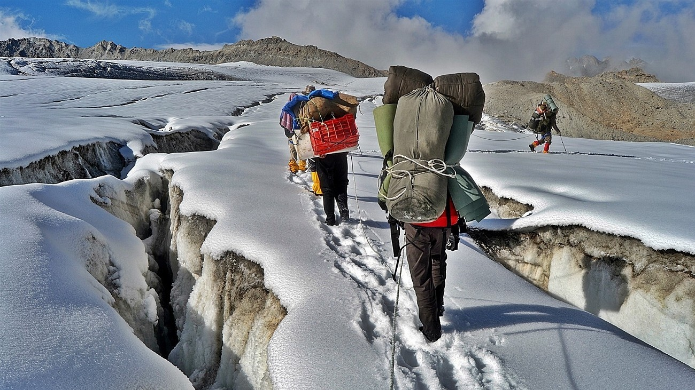

KALIN DI KHAL TREK

- Maximum Altitude: 19,520 feet
- Expedition Duration: 15 days
- Best Season: June and September
- Difficulty Level: Very Difficult
Kalindi Khal Pass Trek is the most difficult trek route in the Garhwal Himalayas. Trekkers will be expected to cover a distance of almost 100 km. The course of this rough trail connects the pilgrimage sites of Gangotri and Badrinath. The Kalindi Khal Trek is undeniably difficult and since some basic mountaineering skills are required to accomplish this trek, it is recommended for experienced trekkers only. This legendary trek takes you through rugged glaciers, crevassed snowfields, rocky moraines while unleashing magnificent views of some of the most prominent Himalayan peaks like Shivling, Meru, Kedar Dome, Nilkant, Avalanche Peak, Kamet, Mana, etc.
